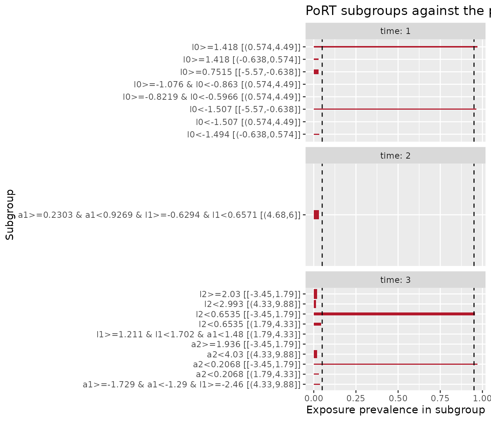

Most positivity diagnostics report a distribution of per-unit numbers
and leave you to decide which units matter. The Positivity Regression
Tree (PoRT) algorithm of Danelian et al. (2023) reports something
different: named covariate subgroups in which one exposure level is rare
or absent, each described by a rule you can read. A subgroup you can
name is a subgroup you can reason about. You can decide whether the rule
describes a structural impossibility, which narrows the causal question,
or a practical shortage in the tails, which is a finite-sample problem.
This vignette covers check_port() for point treatments, the
three parameters that control its reading rule, continuous exposures,
and the sequential extension check_port_seq() for treatment
regimes over time.
Setup
We use the two simulated datasets that positively provides.
pos_violations is a point-treatment dataset with two
planted problems, documented in ?pos_violations: a
structural violation in which no subject with region == "b"
and x2 > 1 is exposed, and a practical near-violation in
the tails of x1, where exposure is almost determined by
x1 while both exposure levels remain observed overall.
pos_violations_long is a wide longitudinal dataset with
continuous exposures a1, a2, and
a3 over three time points.
Finding subgroups with PoRT
check_port() takes the data, the exposure column, and
the covariates. It grows shallow regression trees on the covariates with
the exposure as the response, then reads a fixed rule off each tree to
report subgroups where exposure prevalence is extreme.
port <- check_port(pos_violations, exposure, c(x1, x2, region))
#> ℹ Treating `.exposure` as binary
port
#>
#> ── PoRT subgroups ──────────────────────────────────────────────────────────────
#> Exposure: "exposure" (binary)
#> Observations: 1000
#> Reading rule: alpha = 0.05, gamma = 2
#> Prevalence threshold beta: 0.05
#> Subgroups: 231 reported, 3 with low supportThe message reports that the exposure was detected as binary. For a
binary exposure the response is the indicator of the higher level, so
exposure_level is "1" and
prevalence is the share exposed within each subgroup. PoRT
reports every terminal subgroup it examined, most of them well
supported. The low_support column marks the subgroups that
meet the published reading rule: a prevalence below beta
(the prevalence threshold considered low) or above
1 - beta, among subgroups that are at least
alpha of the sample. Filtering to the low-support rows is
the usual first step.
tidy(port) |>
filter(low_support) |>
select(description, exposure_level, n, prevalence)
#> # A tibble: 3 × 4
#> description exposure_level n prevalence
#> <chr> <chr> <int> <dbl>
#> 1 x1<-0.5027 1 305 0.0459
#> 2 x1>=0.9626 & x1<1.154 1 53 0.962
#> 3 x2>=1.063 & region=b 1 69 0PoRT recovers both planted violations and describes each in the
covariates. The rule x2 >= ... & region = b has an
exposure prevalence of exactly zero: this is the structural subgroup,
empty by construction. The two x1 rules, one in the lower
tail with prevalence near 0.05 and one in the upper tail with prevalence
near 0.96, are the practical near-violation, where exposure is almost
but not entirely determined by x1. The prevalence of
exactly zero marks the structural subgroup, and the near-zero and
near-one prevalences mark the practical tails.
The autoplot() method draws the reported subgroups as a
horizontal bar chart of prevalence, with dashed reference lines at
beta and 1 - beta and the low-support
subgroups highlighted. Bar width is proportional to subgroup size. By
default the chart draws every reported subgroup, a couple of hundred
here, which crowds the y axis. Setting
low_support_only = TRUE restricts the chart to the
low-support rows.
autoplot(port, low_support_only = TRUE)
Tuning the reading rule
Three parameters govern which subgroups read as low support and how the trees are searched. Reasoning about them is the core of using PoRT, because the same data report different subgroups under different settings.
alpha is the minimum subgroup size for
the reading rule, as a fraction of the sample. Raising it holds PoRT to
larger subgroups and suppresses small ones. At the default
0.05 the rule applies to subgroups of at least 50
observations; at 0.10 it requires at least 100, which drops
the upper x1 tail and the structural subgroup and leaves
only the large lower tail.
port_alpha <- check_port(pos_violations, exposure, c(x1, x2, region), alpha = 0.10)
#> ℹ Treating `.exposure` as binary
tidy(port_alpha) |>
filter(low_support) |>
select(description, n, prevalence)
#> # A tibble: 1 × 3
#> description n prevalence
#> <chr> <int> <dbl>
#> 1 x1<-0.5027 305 0.0459beta is the prevalence threshold. A
smaller beta demands a more extreme prevalence before a
subgroup reads as low support. Setting beta = "gruber"
resolves the threshold to the sample-size-adaptive bound \(5 / (\sqrt{n} \log n)\) that sPoRT uses,
which is about 0.023 at this sample size and so tighter than the
default. The tighter threshold drops the upper x1 tail,
whose prevalence of 0.96 no longer clears 1 - beta, and
tightens the lower-tail rule to a more extreme cut of
x1.
port_beta <- check_port(pos_violations, exposure, c(x1, x2, region), beta = "gruber")
#> ℹ Treating `.exposure` as binary
tidy(port_beta) |>
filter(low_support) |>
select(description, n, prevalence)
#> # A tibble: 2 × 3
#> description n prevalence
#> <chr> <int> <dbl>
#> 1 x1<-0.7657 217 0.0138
#> 2 x2>=1.063 & region=b 69 0gamma is the maximum number of
covariates that may jointly define a subgroup. The combination search
grows single-covariate trees first, then trees over pairs of covariates,
up to gamma. Raising it uncovers joint violations that no
single covariate isolates. The structural subgroup here is one such
violation: it is defined by x2 and region
together, so it appears only when gamma is at least 2. At
gamma = 1 PoRT reports the two x1 tails but
not the structural cell.
port_gamma <- check_port(pos_violations, exposure, c(x1, x2, region), gamma = 1)
#> ℹ Treating `.exposure` as binary
tidy(port_gamma) |>
filter(low_support) |>
select(description, n, prevalence)
#> # A tibble: 2 × 3
#> description n prevalence
#> <chr> <int> <dbl>
#> 1 x1<-0.5027 305 0.0459
#> 2 x1>=0.9626 & x1<1.154 53 0.962Higher gamma finds more, at the cost of more trees, and
the combination search is where PoRT spends its time on wide covariate
sets.
Continuous exposures
For a continuous exposure check_port() first categorizes
the exposure into bins, then treats each bin as a level and searches for
covariate subgroups in which that bin is rare. The number of quantile
bins is set by n_bins, and explicit cut points can be
supplied through breaks, which overrides
n_bins. The following runs PoRT on the time-1 exposure
a1 from the longitudinal dataset, conditioning on the
baseline covariate l0, with four quantile bins.
port_cont <- check_port(pos_violations_long, a1, c(l0), n_bins = 4)
#> ℹ Treating `.exposure` as continuous
port_cont
#>
#> ── PoRT subgroups ──────────────────────────────────────────────────────────────
#> Exposure: "a1" (continuous)
#> Observations: 500
#> Reading rule: alpha = 0.05, gamma = 2
#> Prevalence threshold beta: 0.05
#> Subgroups: 134 reported, 6 with low supportThe exposure_level column now names the bin interval
rather than a level of a binary exposure, and the reported subgroups
describe regions of l0 in which a given bin of
a1 is rare. This locates conditional shortages of exposure
across the covariate. It does not target a gap in the marginal
distribution of the exposure itself; for continuous support gaps and
their per-value diagnostics, see Positivity for continuous
exposures.
Sequential violations with sPoRT
A treatment regime raises a problem the point diagnostic cannot see.
A violation at a later time point can be masked by subjects who were
already treated and carry that treatment forward. The sequential PoRT
(sPoRT) algorithm of Chatton et al. (2025) applies the reading rule one
time point at a time. Under strategy = "stratified", the
default, it fits a tree at each time point among the subjects still
following the regime, so a violation among those subjects is not diluted
by the already-treated. The second strategy, a pooled person-time fit,
is reserved for a later release; strategy = "pooled"
currently signals an error.
check_port_seq() takes the data in wide form.
.exposures is an ordered selection of the exposure columns,
one per time point, and .covariates is a list of
selections, one element per time point, of the time-varying
covariates.
sport <- check_port_seq(
pos_violations_long,
c(a1, a2, a3),
list(c(l0), c(l1), c(l2))
)
#> ℹ Treating `.exposures` as continuous
sport
#>
#> ── sPoRT subgroups ─────────────────────────────────────────────────────────────
#> Exposure: "a1", "a2", and "a3" (continuous)
#> Observations: 500
#> Time points: 3
#> Reading rule: alpha = 0.05, gamma = 2
#> Prevalence threshold beta: 0.05
#> Subgroups: 1849 reported, 19 with low supportAt each time point the diagnostic runs the PoRT search with the
current exposure as the response and a conditioning set built from the
baseline covariates, the time-varying covariates, and the earlier
exposures. The results carry a leading time column, and the
low-support rows report the time point at which each subgroup was
found.
tidy(sport) |>
filter(low_support) |>
select(time, description, exposure_level, n, prevalence) |>
head()
#> # A tibble: 6 × 5
#> time description exposure_level n prevalence
#> <int> <chr> <chr> <int> <dbl>
#> 1 1 l0>=0.7515 [-5.57,-0.638] 108 0.0278
#> 2 1 l0<-1.507 [-5.57,-0.638] 28 0.964
#> 3 1 l0<-1.494 (-0.638,0.574] 30 0.0333
#> 4 1 l0>=1.418 (-0.638,0.574] 34 0.0294
#> 5 1 l0<-1.507 (0.574,4.49] 28 0
#> 6 1 l0>=-1.076 & l0<-0.863 (0.574,4.49] 29 0For a binary monotone regime the follower restriction changes the
risk set at each time point: it holds the subjects not yet treated, and
it shrinks over time. When beta = "gruber" the prevalence
threshold is resolved separately at each time point from the size of
that risk set, so smaller follower sets are held to a looser bound. The
exposures in this dataset are continuous, so every subject stays in
every risk set, but the per-time trees and conditioning sets are built
the same way. The autoplot() method facets by time point,
and each facet shows the thresholds applied at its own time point. With
low_support_only = TRUE only the low-support subgroups are
drawn, and a facet without bars means nothing read as low support at
that time point.
autoplot(sport, low_support_only = TRUE)
Limiting the history with lag
The lag argument sets how far back the covariate and
exposure history reaches into each conditioning set. The default
Inf uses the full history. A finite lag
restricts each conditioning set to the most recent time points, which
produces smaller conditioning sets and can drop rules that depend on
distant history. Setting lag = 1 here keeps each time
point’s own covariates plus the covariates and exposure of the one
preceding time point, so the time-3 trees condition on l2,
l1, and a2 alone. The time-1 covariate
l0 and exposure a1 leave the time-3
conditioning set, so low-support rules that referred to a1
can no longer appear, and the trees, refit on the smaller pool, report a
different set of subgroups.
sport_lag <- check_port_seq(
pos_violations_long,
c(a1, a2, a3),
list(c(l0), c(l1), c(l2)),
lag = 1
)
#> ℹ Treating `.exposures` as continuous
tidy(sport_lag) |>
filter(low_support, time == 3) |>
select(time, description, exposure_level, n, prevalence)
#> # A tibble: 8 × 5
#> time description exposure_level n prevalence
#> <int> <chr> <chr> <int> <dbl>
#> 1 3 l2>=2.03 [-3.45,1.79] 302 0.0199
#> 2 3 l2<0.6535 [-3.45,1.79] 91 0.956
#> 3 3 a2>=1.936 [-3.45,1.79] 262 0
#> 4 3 a2<0.2068 [-3.45,1.79] 33 0.970
#> 5 3 l2<0.6535 (1.79,4.33] 91 0.0440
#> 6 3 a2<0.2068 (1.79,4.33] 33 0.0303
#> 7 3 l2<2.993 (4.33,9.88] 243 0.0123
#> 8 3 a2<4.03 (4.33,9.88] 248 0.0202Censoring
In a longitudinal study, subjects who are censored leave the risk
set, and remaining uncensored is itself a condition of the
counterfactual question. The .censoring argument takes an
ordered selection of censoring indicators, one per time point, each
coded 1 when the subject is censored and 0
otherwise. When supplied, check_port_seq() analyzes each
indicator as its own binary-exposure tree in addition to the exposure
trees, using the same two-sided reading rule. The rule reports a
subgroup whose censoring prevalence is below beta or above
1 - beta. The upper tail reports a subgroup nearly certain
to be censored, just as the exposure trees report a subgroup nearly
certain to be treated. The lower tail reports a subgroup nearly certain
to remain uncensored, the never-censored subgroups on which the
counterfactual under no censoring rests (Chatton et al. 2025). Because
censoring is light in most subgroups, the lower tail usually accounts
for most of the low-support censoring rows. Following Chatton et
al. (2025), the censoring tree at each time point runs on the subjects
uncensored through the previous time point, the never-censored risk set,
and adds the current treatment to its conditioning set. The treatment
rule plays no role in the censoring process, so this risk set is the
full uncensored cohort rather than the treatment followers. Supplying
.censoring also restricts each exposure risk set to the
followers who are still uncensored, since a subject censored earlier has
no observed exposure to analyze.
The longitudinal dataset carries continuous exposures and no
censoring columns, so the following small seeded example constructs a
monotone binary regime with censoring planted to be near-certain at time
2 for subjects with a baseline covariate l0 above 1.
set.seed(2025)
n <- 2000
l0 <- rnorm(n)
a1 <- rbinom(n, 1, 0.3)
c1 <- rbinom(n, 1, 0.08)
# Monotone treatment: once treated, stays treated.
a2 <- a1
followers <- a1 == 0
a2[followers] <- rbinom(sum(followers), 1, 0.4)
# Time-2 censoring among the uncensored, near-certain where l0 > 1.
c2 <- integer(n)
uncensored <- c1 == 0
prob_censor <- ifelse(l0 > 1, 0.98, 0.1)
c2[uncensored] <- rbinom(sum(uncensored), 1, prob_censor[uncensored])
regime <- data.frame(l0 = l0, a1 = a1, c1 = c1, a2 = a2, c2 = c2)Passing .censoring runs both families of trees. The
results carry a type column that separates censoring rows
from exposure rows.
cens <- check_port_seq(
regime,
c(a1, a2),
list(c(l0)),
.censoring = c(c1, c2)
)
#> ℹ Treating `.exposures` as binary
cens
#>
#> ── sPoRT subgroups ─────────────────────────────────────────────────────────────
#> Exposure: "a1" and "a2" (binary)
#> Observations: 2000
#> Time points: 2
#> Reading rule: alpha = 0.05, gamma = 2
#> Prevalence threshold beta: 0.05
#> Exposure subgroups: 410 reported, 0 with low support
#> Censoring subgroups: 216 reported, 5 with low supportFiltering to the low-support censoring rows surfaces the planted
subgroup at the upper tail: at time 2, censoring is near-certain where
l0 is above 1, with a prevalence close to 1. The remaining
low-support rows sit at the lower tail, with prevalences below
beta. These are the never-censored subgroups, in which
almost no one is censored, and the two-sided rule reports them alongside
the near-certain-to-be-censored subgroup. Reading the
prevalence column tells the two tails apart.
tidy(cens) |>
filter(type == "censoring", low_support) |>
select(time, description, exposure_level, n, prevalence)
#> # A tibble: 5 × 5
#> time description exposure_level n prevalence
#> <int> <chr> <chr> <int> <dbl>
#> 1 1 l0>=-0.0481 & l0<0.5229 1 444 0.0450
#> 2 1 l0>=-0.9272 & l0<-0.7372 1 121 0.0331
#> 3 1 l0>=-0.5353 & l0<-0.348 1 121 0.0496
#> 4 2 l0>=0.4941 & l0<0.6677 1 101 0.0495
#> 5 2 l0>=0.9991 1 274 0.971Where to go next
-
Getting started with positively introduces
check_positivity()and the full set of point-treatment diagnostics onpos_violations. - Positivity for continuous exposures covers effective data points, hat values, and highest density region non-overlap, which are the diagnostics designed around continuous support gaps.
References
Chatton A, Schomaker M, Luque-Fernandez MA, Platt RW, Schnitzer ME (2025). Is checking for sequential positivity violations getting you down? Try sPoRT!
Danelian G, Foucher Y, Léger M, Le Borgne F, Chatton A (2023). Identification of in-sample positivity violations using regression trees: the PoRT algorithm.